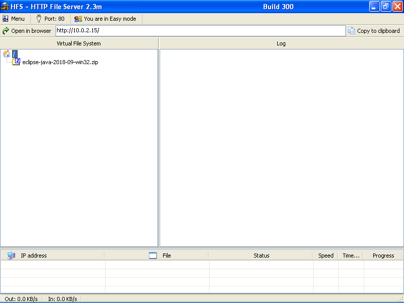
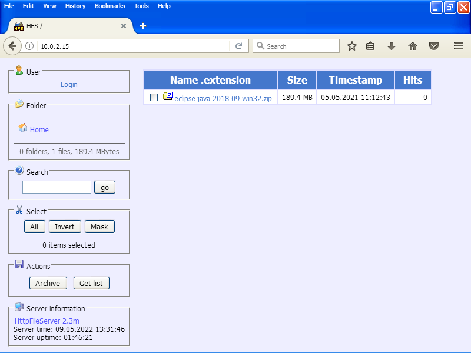
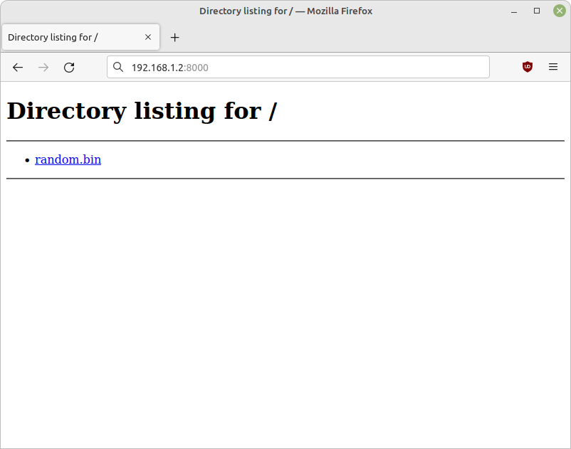

Как раздать файлы в домашней сети
В прошлом я много рекомендовал HFS 2. К сожалению, Rejetto кардинально изменил свой софт в версии 3. Теперь это другая программа. Рекомендовать её в новом виде я не могу. Старая версия, как пишет разработчик, “имеет проблемы с безопасностью”. Патчить HFS 2-й версии Rejetto не будет.
Метод подходит для копирования файлов:
- с компьютера на телефон без USB-кабеля
- на ноутбук без флешки
- на VM с хост-машины
- без настройки SMB, NFS, FTP
- без настройки Nginx или Apache
- на устройство, где нельзя установить ПО
Запуск сервера на Windows
Для Windows используем портативное приложение HFS размером 2.5MB. Работает, начиная от XP. Последовательность действий:
- скачать и запустить
hfs.exe - скинуть в окно файлы для раздачи
- HFS определит IP сервера, на скриншоте это
10.0.2.15

Запуск сервера на Linux или OS X
Дистрибутивы Linux и Mac OS X поставляются с Python и модулем HTTP сервера, который решает задачу раздачи файлов. Перейдем в папку с файлами для раздачи:
$ cd /home/my_user/dir_to_share
Выполним команду запуска для Python 3 и модуля http.server:
$ python3 -m http.server
При отсутствии Python 3 – для Python 2 и модуля SimpleHTTPServer:
$ python2 -m SimpleHTTPServer
Сервер запустится на порте 8000 всех сетевых интерфейсов.
Узнаем IP раздающего устройства в домашней сети:
$ ip -o route get '1.1.1.1' | awk '{ print $7 }'
Или посмотрим IP для всех интерфейсов и подберем нужный:
$ ip -br a
Загрузка файлов
Переходим в веб-браузере по IP сервера и посмотрим на список доступных файлов.


Скачиваем необходимые файлы по клику в списке.
Журнал изменений
16 сентября 2022 г.: заменил устаревший ifconfig для подбора IP адреса на ip -br a.
11 февраля 2025 г.: добавил замечание о новой версии HFS и проблемах с безопасностью.